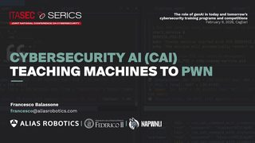
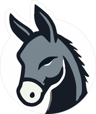

Agentic offensive security
Offensive agents that plan and execute real attack chains — ranking #1 among AI teams in security CTFs, competing in Attack/Defense battlegrounds and testing real systems, from OT networks to consumer robots.
Francesco Balassone
AI Security Research Lead @ CYBER RANGES · PhD @ Federico II
I'm Francesco, an AI cybersecurity researcher. I build and evaluate offensive and defensive AI agents that hack, defend and emulate real adversaries — for military, government and enterprise.
An Offensive Agent moves through a network from left to right; a Defensive Agent detects and contains it.
Where offensive security meets autonomous agents.
Home lab
I'm a PhD student at ARCLAB, in the Department of Electrical Engineering and Information Technology (DIETI) of the University of Naples Federico II.
Inside ARCLAB we run DARKLAB, the lab's cybersecurity branch — offensive and defensive AI, adversary emulation and CTFs, a few steps from the Maradona stadium in Fuorigrotta.
Offensive agents that plan and execute real attack chains — ranking #1 among AI teams in security CTFs, competing in Attack/Defense battlegrounds and testing real systems, from OT networks to consumer robots.
AI agents configured as real APT groups — APT28, APT29, APT41, APT44, Lazarus — raise a hard question: if anyone can emulate a playbook, do TTPs still tell us who attacked?
Static benchmarks saturate. I work on harder yardsticks: meta-benchmarks, harness comparisons and Dynamic Cyber Ranges where LLM defenders fight back in real time.
Are AI agents better at attacking or defending? Across 23 Attack/Defense CTF battlegrounds, defensive agents patched far more often than offensive agents gained initial access (54.3% vs 28.3%) — but the advantage vanished once defenders had to keep services up and stop every intrusion.
arXiv:2606.07158
arXiv:2604.24184
arXiv:2603.08665
Proceedings of the AAAI Symposium Series 9(1)
arXiv:2601.05887
AAAI-26 Workshop on AI for Cyber Security (AICS)
AAAI-26 Workshop on Reproducible AI (RAI)
AAAI-26 Workshop on AI for Cyber Security (AICS)
ITASEC & SERICS 2026 · Joint National Conference on Cybersecurity · Cagliari, Feb 9 · recording ↗ (in Italian)

Co-founder & Captain

The competitive hacking team of the University of Naples Federico II.
napwnli was born in 2024 from the finalists of the Naples team of CyberChallenge.IT. I co-founded it and I captain it: we play CTFs all over the world, learn together, and build a community of people who enjoy hard problems — web, pwn, crypto, reversing and Attack/Defense.
First posts are on the way.
I lead AI security research at CYBER RANGES and I'm an industrial PhD student at the University of Naples Federico II.
At CYBER RANGES I lead AI security research, drills and training programs for military, government and law enforcement. My PhD — “Towards Autonomous Red Teaming: Agentic AI for Offensive Cybersecurity Operations” — is supervised by Profs. Simon Pietro Romano and Gaetano Perrone, in partnership with Alias Robotics and CYBER RANGES.
Before that, at Alias Robotics, I co-created CAI and led research on agentic AI for offense and defense: from Jeopardy CTFs to full Attack/Defense competitions, synthetic APT campaigns and production-like cyber ranges.
Before the papers there were CTFs. I co-founded and captain napwnli, and I've gone from CyberChallenge.IT student to instructor — still the best way I know to learn how systems break.
“TL;DR I like computers. I'm not sure they like me…”
Let's talk — research, collaborations, CTFs.